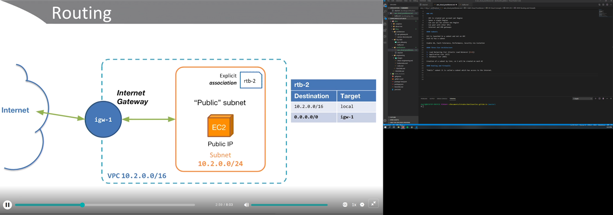
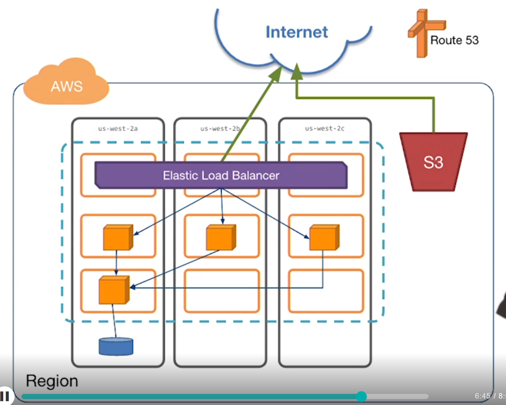
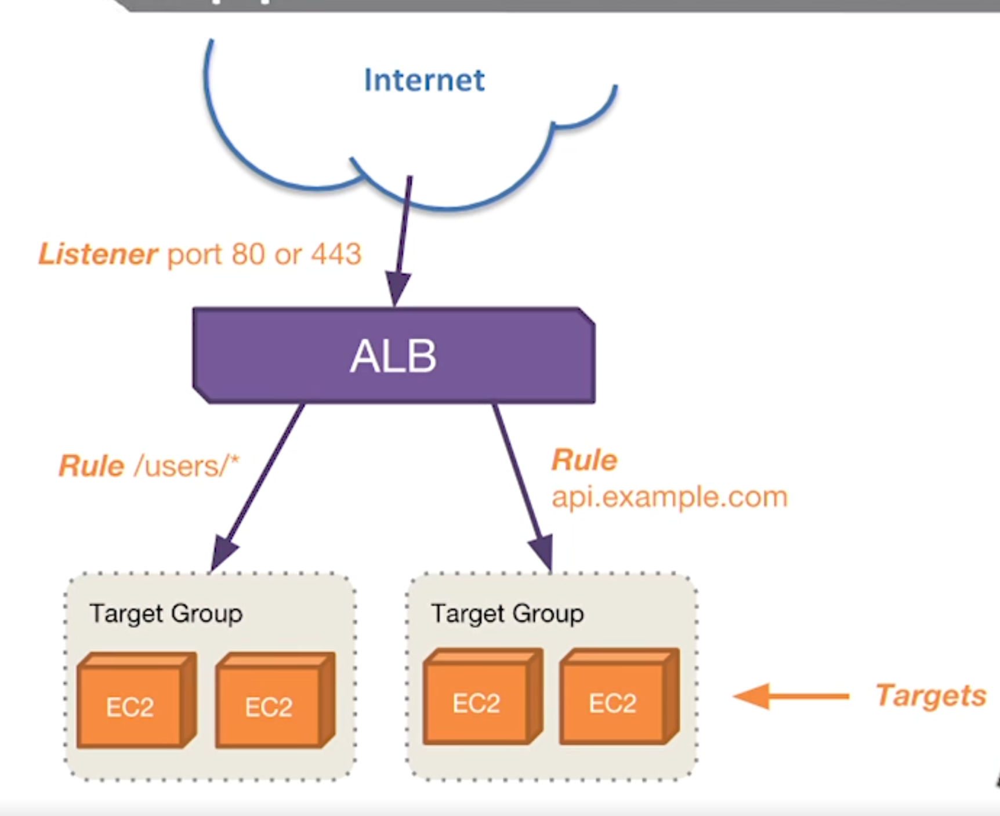
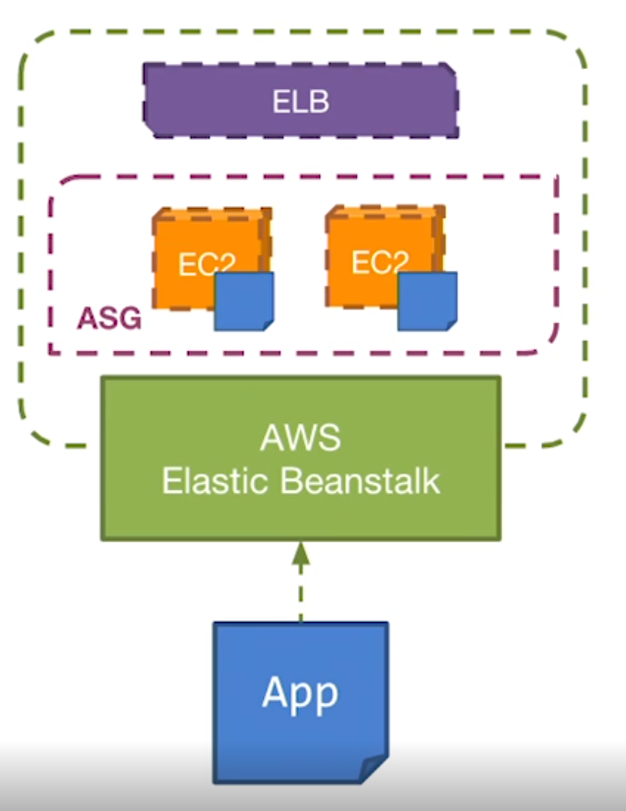
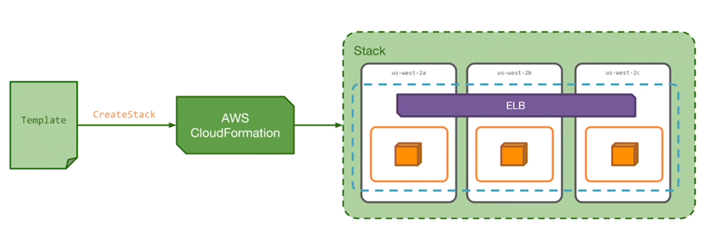

My notes for AWS Cloud Practitioner Exam
Cloud Concepts
VPC
- VPC is created per account per Region
- Spans a single Region
- Can use all AZs within one Region
- Can peer with other VPCs
- Internet and VPN gateways
CIDR block permitted are between /16 to /28
Subnets
EC2 is launched in a subnet and not on VPC
Each AZ has a subnet
Enable HA, Fault-Tolerance, Performance, Security via isolation
Three-Tier Architecture
- Load Balancing tier (Elastic Load Balancer [ELB])
- Application tier (EC2)
- Database tier (RDS)
Creation of a subnet by tier, so 3 will be created on each AZ
Routing and Firewalls
“Public” subnet it is called a subnet which has access to the internet.

Network Access Control Lists (NACL) firewall of the subnet.
Security Groups firewalls for particular machines (instance or database).
DNS and VPN
Amazon Route 53 use:
- Register domains
- AWS nameservers
- Public and private DNS zones
- Learn more about DNSSEC?
AWS Hardware VPN
AWS Direct Connect it is a fiber connection between company and AWS.
EC2
Dedicated Instance and Dedicated Host are some ways to isolate a company because law enforcements, policies on AWS.
Best Practices
- Treat as disposable
- “Immutable infrastructure”
- Treat logs as streams
- Leverage roles
- Automate deployments
- Monitor with CloudWatch
- Enable scaling and self-healing with Auto Scaling

Elastic Block Storage (EBS)
EBS is used to mount a volume and attach to a compute resource; used when the files changes often; it is used as file system.
The S3 is used to static content, contents that not change too much.
If EBS has accidentaly or intentionally deleted, we can restore it from a snapshot.
RAID 0: It’s a way to make HDs or SSDs work together, and also is recognized as striping.
RAID 5: It’s a way safer to make HDs or SSDs work together. The difference between RAID 0 and 5 is that RAID 5 uses at least one HD to record parity.
Learn more about Provisioned IOPS
Block Storage vs Object Storage
Let`s say we need to change part of a file like 8 bytes in the middle of the file. How can we do?
With Block Storage we can change part of a file like the 8 bytes in the middle of it.
With Object Storage we need to upload a new file modified.
EBS can be encrypted during its creation.
Elastic Load Balancing (ELB)
Three types of Load Balancing:
- Classic
- Application
- Network
Application Load Balancing
With Application Load Balancing we can set up content filtering path/hostname routing.
Allows dynamic port mapping on different ports allowing to run multiple instances of the same app on the same EC2.

Network Load Balancing
Make notes here
AWS Elastic Beanstalk
- Application Management Platform
- Simply upload application
- Automatically handles
- Capacity provisioning
- Load balancing
- Auto scaling
- Monitoring
- Deployment

AWS CloudFront
Edge location
The default duration time to keep a file on Edge location is 24 hours, if not accessed.
AWS Cloud Formation
IaC - Infrastructure as Code
- Template-based infrastucture management
- Declarative programming
- Library for common architectures

AWS Web Application Firewall (WAF)
- Layer 7 content filtering
- Supports rules to block/allow/count
- Integrates with Amazon CloudFront
- Protect against
- SQL Injection
- Cross-site Scripting (XSS)
AWS Shield
- Distributed Denial of Service (DDoS) protection service
- Standard
- UDP reflection
- SYN floods
- SSL renegotiation
- Slow loris attacks
- Available for free
- Integrates with CloudFront and ELB (Elastic Load Balancing)
AWS Shield Advanced
- Addition detection/mitigation
- Near real-time visibility
- Integrates with AWS WAF
- Access to DDoS Response Team
AWS SQS
learn more about it
AWS S3
See Infrequent Access
study more concepts and rules
AWS Data Migration Service (DMS)
learn more about it
AWS DynamoDB
Table, Items, Attributes are the basic components on DynamoDB.
With DynamoDB Stream, we can for example create a trigger, when a new customer is registered we can use AWS Lambda to send an e-mail through AWS Simple Email Service (SES).
Data Types
Scalar Types are number, string, binary, Boolean and null
To represent date or a timestamp is use ISO 8601 strings, as these examples:
- 2016-02-15
- 2015-12-21T17:42:34Z
- 20150311T122706Z
For date is easier to read data in ISO 8601 format, but it’s impossible to use TTL this way. To use TTL, you must number data type in epoch time – the number of seconds since 00:00:00 UTC on 1 January 1970.
Document types is another type that can be used. List, Maps, Sets are the three types that can be used.
A Map is very similar to JSON object.
There are two Read/Write Capacity Mode, these are On-Demand Mode and Provisioned (default, free-tier eligible).
The On-Demand Mode is for application that has unpredictable application traffic, also if we create new tables with unknown workloads.
The Provisioned is for application that has predicatable application traffic. The main point on it is govern your DynamoDB stay at or below a defined request rate in order to obtain cost predictability.
Security in AWS
The Shared Responsibility Model
AWS is responsible for:
- Physical security
- Facilities/DCs
- Edge Locations
- Rack and chassis
- Network
- APIs
- Hypervisor
- Managed Services
- Storage
- Databases
Customer is responsible for:
-
OS (Operating System)
-
Network & firewall configuration
-
Identity and access
- Credentials
- Permissions
-
Applications
-
Data
-
Encryption
- At rest
- In transit
-
Inherited
- Physical
- Environmental
-
Shared
- Patch management
- Configuration management
- Education of employees
-
Customer Specific
- Application
- Zone security
AWS Organizations
-
Consolidated Billing
- One bill, many accounts
- Aggregated volume pricing
- Reserved instances apply to all acoounts
-
Detailed Billing
- Published to S3 bucket
- Filter/Sort by service, tag, etc.
AMI
Configures two items OS and Root volume.
AWS Pricing
EC2 On-Demand Pricing
- No long-term commitments
- Fees include OS license
- Per hour billed hour forward (each hour is billed) (e.g. Windows machines)
- Per second minimum 60 seconds (billed per each second)
EC2 Reserved Instances (RI)
- Up to 75% discount vs On-Demand
- Provide capacity reservation
- Commitment for 1 year to 3 year term
- Attributes (type, platform, single-tentat, AZ)
Types of RI
Standard RI
- Up to 75% off On-Demand
- Can`t change attributes
Convertible RI
- Up to 54% off On-Demand
- Can change attributes
Scheduled RI
- Good for during a specifiic time window.
- Good for Jobs that we know how much time it will run;
- Processing that we do weekly or daily
EC2 Spot Pricing
- Gain discounts on spare capacity
- Save up to 90% vs On-Demand
- Price is variable
- Spot instances can be interrupted
If I`m willing to pay .10 cents per hour and someone else will pay .11 cents per hour, so the instance will be shut down to me after the 2 minutes warning.
Use Cases
- Image rendering
- Video transcoding
- Analytics
- Machine Learning
Great for too:
- Apps with flexible start/end times
- Dev/test environment
AWS Lambda Pricing
- Charged per GB memory per 100ms (how much more we use of memory per time, we`ll pay more)
- Charged per 1M requests
- Free tier
- 1M requests/mth
- 400.000 GB-Seconds/mth
- Additional charges for
- Bandwidth
- S3
Data Transfer Pricing
- Inbound generally free
- S3 to CloudFront is free
- Outbound to internet
- $/GB/mth
- Applies cross-region traffic
- Tiered pricing
- Cross-AZ traffic $/GB/mth
- VPC peering $/GB/mth
Amazon RDS Pricing
- Price determined by
- Instance type
- DB engine (license)
- RI discount
- Multi-AZ deployments 2X $
- Storage (EBS volumes)
- $/GB/mth
- $/provisioned IOPS/mth
Amazon DynamoDB Pricing
- Charged for provisioned throughput
- $/Write capacity unit
- $/Read capacity unit
- Charged for storage consumed
EBS Pricing
- $/GB/mth of provisioned storage
- General purpose SSD
- Provisioned IOPS storage
- Magnetic volumes
- Additional costs for
- $/provisioned IOPS
- EBS Snapshots to Amazon S3
S3 pricing
- $/GB/mth of consumed storage
- Additional costs for requests
- PUT, COPY, POST, LIST $/1000
- GET $/1000
- Storage classes
- Infrequent Access (data that is not much accessed, but when, it will give in real time)
- Glacier (archive history)
Cost Management
AWS Calculators
AWS Calculator
AWS Total Cost of Ownership
Tools
AWS Cost and Usage Reports
AWS Trusted Advisors
Trusted Advisors check automatically if it has a load balance with no registred instances, so it idle can be removed.
It also check Security of some services and network
Seven Core checks:
- S3 Bucket Permissions
- Security Groups
- IAM Use
- MFA (Multi-Factor Authentication) on Root Account
- EBS Public Snapshots
- RDS Public Snapshots
- Service Limits (when some service get to hard limit)
AWS Support
- Basic
- Core Trusted Advisor checks
- No technical support
- Can submit
- Bugs
- Feature requests
- Service limit increases
- Developer
- Core Trusted Advisor checks
- Business hours access to Cloud Support Associates
- Guidance < 24 business hours
- Impairments < 12 business hours
- Only offers “General guidance”
- Business
- 24/7 access to Cloud Support Engineers
- Email, chat, phone of the engineers
- 1 - 24-hour response
- Enterprise
- Technical Account Manager (a person)